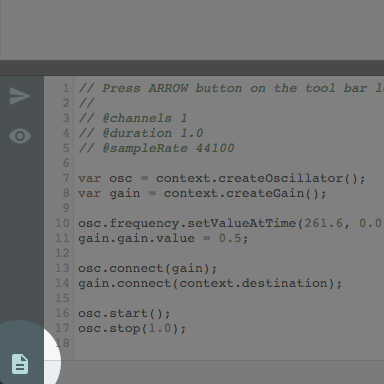
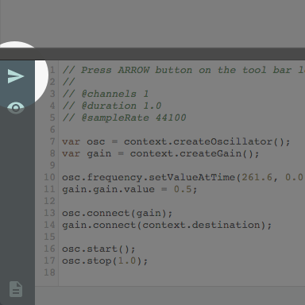
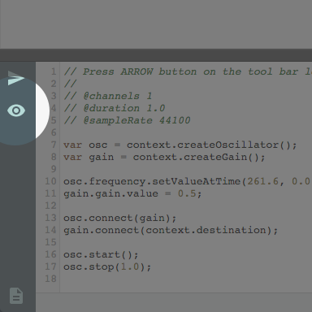

Write or load code.
Load a code snippet by clicking the document icon at the bottom
left or you can just write code in the editor.

Render the code.
Once you have code in the editor, click the arrow icon to render
the code. This will play the sound and draw the visualization.

Inspect waveform.
You can inspect the waveform by dragging around. Drag vertically
to zoom in and out on the time, and horizontally to pan the
view port.

Navigate waveform.
You can use the mini map to navigate the waveform faster.

Play sound.
The rendered audio buffer can be played without re-rendering.
You can also loop the range selected by the view port.

Change view mode.
You can also inspect the graph after rendering the code.
Clicking the eye icon will toggle the view mode between the
waveform and the audio graph.

Inspect audiograph.
In the audio graph mode, you can zoom in and out by the mouse
wheel, move by dragging and click a node or an edge to inspect
AudioNode, AudioParam or even the connection.
That's it!
Have fun with Canopy!